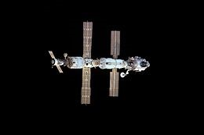
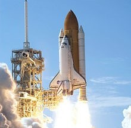

Highlights
1991 - Present
-

Expedition 1 was the first long-duration stay on the International Space Station (ISS). The three-person crew stayed aboard the station for 136 days, from November 2000 to March 2001. It was the beginning of an uninterrupted human presence on the station which continues ... Read more... -

Landsat 1, originally named "Earth Resources Technology Satellite 1", was the first satellite of the United States' Landsat program. It was a modified version of the Nimbus 4 meteorological satellite and was launched .. Read more... -

Space Shuttle Discovery (Orbiter Vehicle Designation: OV-103) is one of the orbiters from NASA's Space Shuttle program and the third of five fully operational orbiters to be built. Its first mission, STS-41-D, flew from August 30 to September 5, 1984. Read more... -

Phoenix was a robotic spacecraft on a space exploration mission on Mars under the Mars Scout Program. The Phoenix landerdescended on Mars on May 25, 2008. Mission scientists used instruments aboard the lander to search for environments suitable for ... Read more... -
NASA's Mars Exploration Rover (MER) mission is an ongoing robotic space mission involving two Mars rovers, Spirit and Opportunity, exploring the planet Mars. It began in 2003 with the sending of the two rovers: MER-A Spirit and MER-B Opportunity—to explore ... Read more... -

Lunar Reconnaissance Orbiter (LRO) and Lunar Crater Observation and Sensing Satellite (LCROSS) The Lunar Reconnaissance Orbiter (LRO) is a NASA robotic spacecraft currently orbiting the Moon in an eccentric polar mapping orbit... Read more...